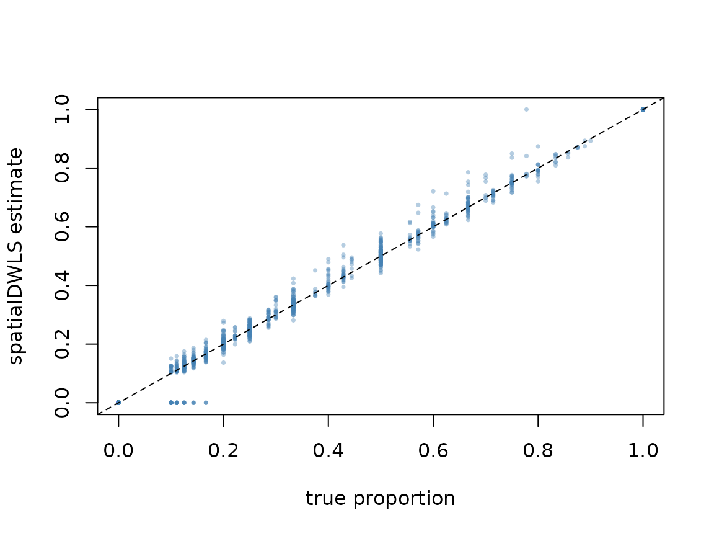

This example uses nothing but matrices: no Giotto, no Seurat, no SpatialExperiment. If your data already lives in a Giotto object, see Using spatialDWLS from Giotto instead.
spatialDWLS needs three things:
- Spot expression: log-normalised, features x spots.
- A reference: mean expression of each cell type over a set of signature features, built from single-cell data.
- A cluster per spot: spots are grouped to decide which cell types are plausible where. Any clustering of the spots works (e.g. Leiden on the expression).
Simulate a small dataset with known answers
To be able to check the result, we simulate spots whose true composition is known. Eight cell types each get 40 marker genes; each spot holds 2 to 10 cells drawn from one of six tissue niches; the niche is the spot’s cluster.
set.seed(1)
n_genes <- 1500; n_types <- 8; n_spots <- 400
types <- paste0("type", seq_len(n_types))
# expression profile of each cell type
profile <- matrix(rlnorm(n_genes), n_genes, n_types,
dimnames = list(paste0("g", seq_len(n_genes)), types))
markers <- split(sample(n_genes, 40 * n_types), rep(types, each = 40))
for (ct in types) {
profile[markers[[ct]], ct] <- profile[markers[[ct]], ct] * runif(40, 4, 10)
}
profile <- sweep(profile, 2, colSums(profile), "/") * 5000
normalise <- function(counts) {
counts <- Matrix(counts, sparse = TRUE)
t(t(counts) / pmax(colSums(counts), 1)) * 1e4
}
# a single-cell reference: 60 cells per type
ref_type <- rep(types, each = 60)
ref <- matrix(rpois(n_genes * length(ref_type), profile[, ref_type] * 0.3),
n_genes, dimnames = list(rownames(profile), NULL))
# spots: each niche favours a few cell types
niche_mix <- t(replicate(6, { p <- rgamma(n_types, 0.3); p / sum(p) }))
niche <- sample(6, n_spots, replace = TRUE)
cells <- sample(2:10, n_spots, replace = TRUE)
composition <- sapply(seq_len(n_spots), function(s) {
rmultinom(1, cells[s], niche_mix[niche[s], ])
})
spot_counts <- matrix(rpois(n_genes * n_spots, profile %*% composition * 0.5),
n_genes, dimnames = list(rownames(profile),
paste0("spot", seq_len(n_spots))))
truth <- sweep(composition, 2, cells, "/")
dimnames(truth) <- list(types, colnames(spot_counts))1. Build the reference
dwls_signature() averages each cell type over the
signature features. Pass the reference on the normalised, not
logged scale: that is the scale the spots are solved on.
signature <- dwls_signature(normalise(ref),
sign_gene = rownames(profile)[unlist(markers)],
cell_type = ref_type)
dim(signature)
#> [1] 320 8
round(signature[1:4, 1:4], 1)
#> type1 type2 type3 type4
#> g12 4.7 4.6 28.5 5.2
#> g15 10.7 9.3 10.4 11.5
#> g17 2.8 3.5 15.2 3.4
#> g27 2.7 1.7 2.7 18.32. Deconvolve
The spots go in log-normalised, as most pipelines store them. Sparse input stays sparse.
spot_expr <- normalise(spot_counts)
spot_expr@x <- log2(spot_expr@x + 1)
clusters <- paste0("niche", niche)
prop <- dwls(spot_expr, signature, clusters, n_cell = 10)
dim(prop)
#> [1] 8 400
round(prop[, 1:5], 2)
#> spot1 spot2 spot3 spot4 spot5
#> type1 0.00 0.34 0.65 0.00 0.00
#> type2 0.00 0.00 0.14 0.00 0.00
#> type3 0.65 0.00 0.00 0.51 0.00
#> type4 0.00 0.32 0.00 0.00 0.00
#> type5 0.35 0.34 0.22 0.00 0.13
#> type6 0.00 0.00 0.00 0.00 0.87
#> type7 0.00 0.00 0.00 0.10 0.00
#> type8 0.00 0.00 0.00 0.39 0.00prop holds one column per spot and one row per cell
type. Each spot sums to one:
n_cell is the number of cells you expect in a spot. In
the second round a cell type is only kept for a spot when its
first-round share is at least 1 / n_cell, so it sets how
small a contribution is still believed.
3. Check against the truth
plot(truth, prop[rownames(truth), ], pch = 16, cex = 0.5,
col = adjustcolor("steelblue", 0.4),
xlab = "true proportion", ylab = "spatialDWLS estimate")
abline(0, 1, lty = 2)
Larger data
In parallel. Pass any BiocParallel
param. The result is identical to the serial run.
prop <- dwls(spot_expr, signature, clusters, n_cell = 10,
BPPARAM = BiocParallel::MulticoreParam(8))More spots than memory. dwls_stream()
asks for the expression one window of spots at a time, through a
function you supply, and only for the signature features. The windows
here are just column blocks of the matrix, but read_window
could equally read from disk.
windows <- split(colnames(spot_expr), ceiling(seq_len(n_spots) / 100))
read_window <- function(i, features) spot_expr[features, windows[[i]]]
prop_streamed <- dwls_stream(
read_window = read_window,
n_windows = length(windows),
feat_ids = rownames(spot_expr),
clusters = setNames(clusters, colnames(spot_expr)),
sign_matrix = signature,
n_cell = 10
)
all.equal(prop_streamed, prop)
#> [1] TRUEReference
Dong R, Yuan GC (2021). SpatialDWLS: accurate deconvolution of spatial transcriptomic data. Genome Biology 22, 145. https://doi.org/10.1186/s13059-021-02362-7